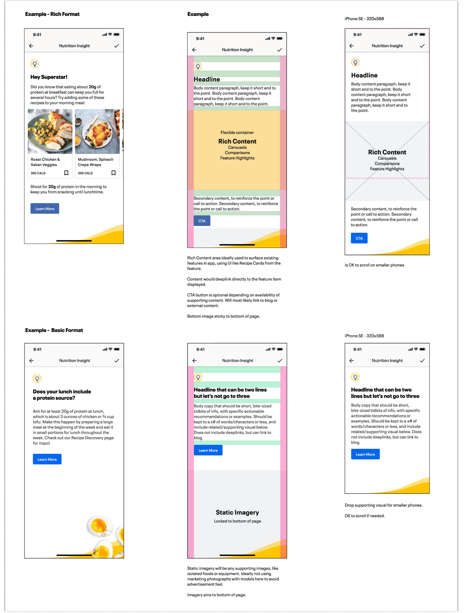
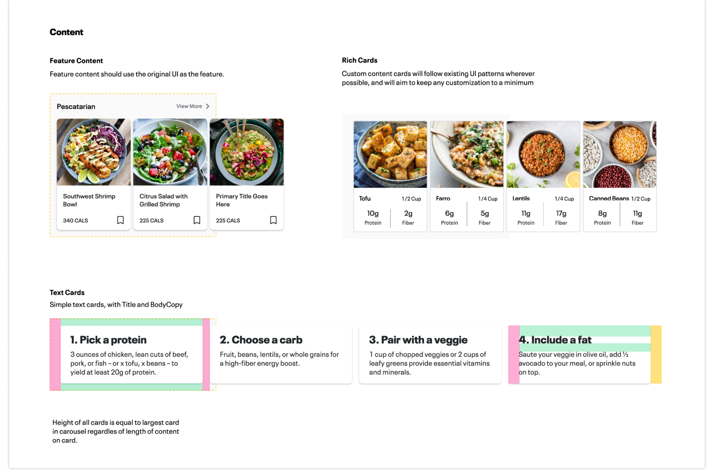

Premium Feature · Insights
Nutrition Insights — Premium insights to help you hit your goals
Relevant insights to help you stay on track — actionable tips and tidbits that meet you where you are in your nutrition journey.
Objective
Increase engagement with actionable tips and tidbits
MyFitnessPal has been at the forefront of nutrition tracking and weight loss for many years — one of the first online and mobile products offering calorie tracking, with the largest database of foods and nutritional breakdowns. But they were struggling to find a way to give users truly actionable insights into their diets.
I worked closely with their in-house nutritionist to develop a set of Insights that would provide lightweight "foods for thought" aimed at getting you to think about your habits in a different light. These would trigger at specific moments depending on the types of foods you were logging, sometimes leading to more features relevant to your goals.

Quick and simple actionable insights to help you hit your goals
Process
Food for thought
The process was focused and deliberate:
- Create a set of 6–10 high-level insights that would resonate with a large portion of the userbase
- Design an engaging visual experience that informed users and led to other actions in the app
- Test the MVP for actionable insights and determine its viability
I created a page structure that supported rich content, allowing existing features to be surfaced within the Insight. The views were optimized for large and small screens alike, with careful consideration to the fold.

Page structure
Design
A balanced diet of information
The Insights ranged in topics from quick snack ideas to recipe cards that drove users deeper into more insights or features. The lightweight insights were quick to digest — direct and to the point. The recipe cards grabbed attention with alluring meal photos and macronutrient information.
We aimed to keep these as unobtrusive as possible, giving users just enough information to keep them moving on with their day feeling better informed about their nutrition options.

Defining the types of content delivery methods
Outcome
Results
- Feature tested well with control groups and indicated a potential increase in engagement with other Premium features
- 20 more Insights were planned and content was being generated...
- ...but Under Armour sold MyFitnessPal, ending the project
This feature definitely had legs and I was very upset that we had to put a full stop to it just as we were ramping up for a V2 aimed at a larger audience, with more specific insights to individual goals. I checked up on it a couple years later and found it revitalized as a much simpler banner on a daily dashboard — not as engaging but still informative, and I'm glad it evolved into a final feature.